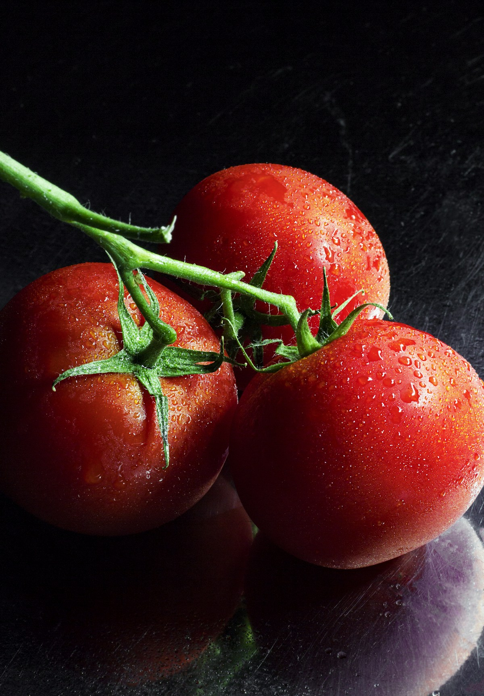
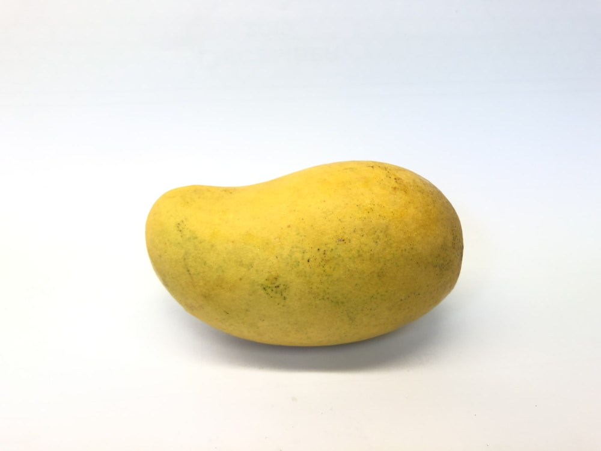
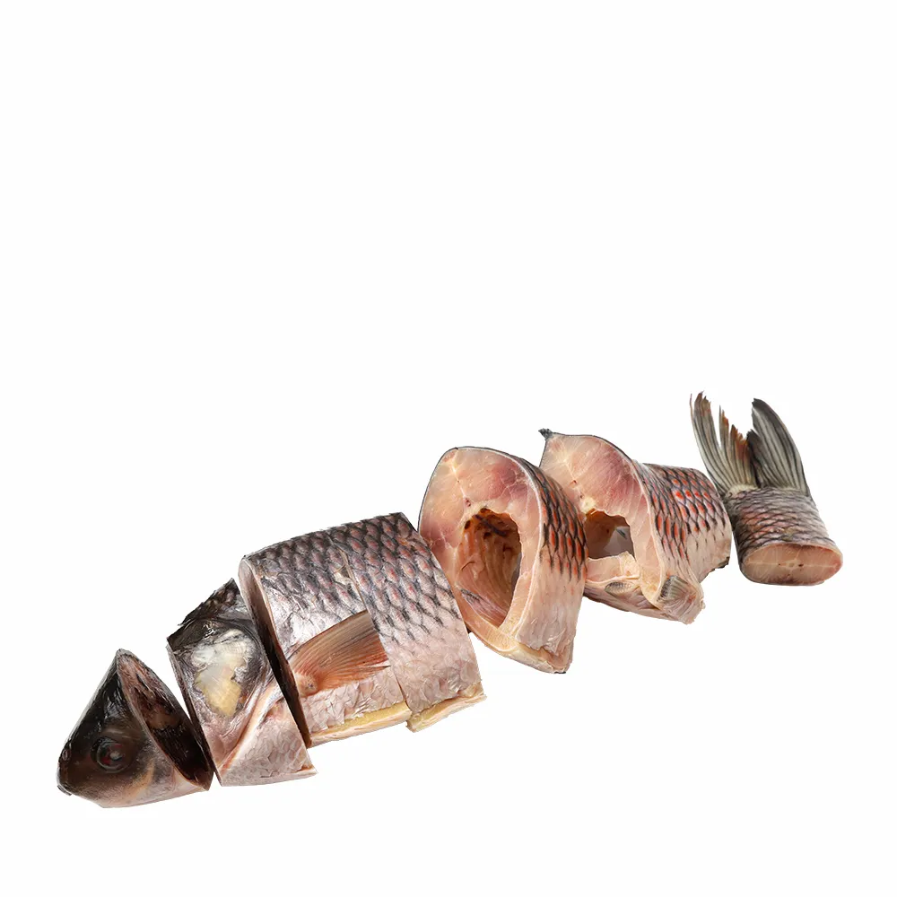
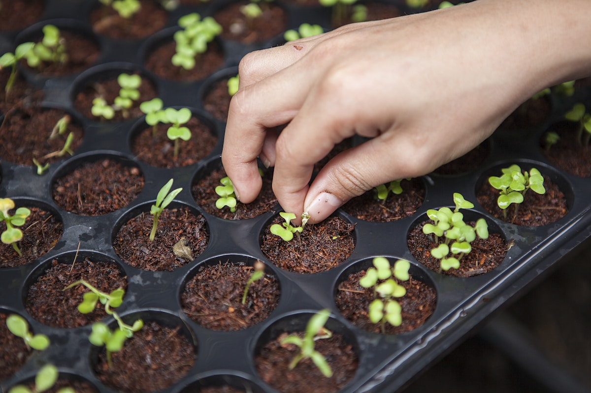
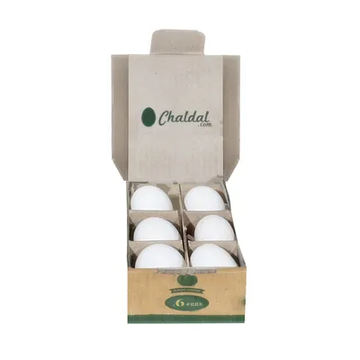

FIELD NOTE02.09.26 · 6 min read
The tomato is telling you everything.
Nahar shows us how scent, weight and a tiny shoulder crack reveal a tomato ready for tonight's dal.
Read the story ↗FIELD NOTES · RECIPES · PEOPLE
Stories for people who like knowing where dinner begins.

FIELD NOTE02.09.26 · 6 min read
Nahar shows us how scent, weight and a tiny shoulder crack reveal a tomato ready for tonight's dal.
Read the story ↗
PEOPLE · 8 MIN

KITCHEN · 5 MIN

FIELD · 4 MIN

KNOW-HOW · 7 MIN

PEOPLE · 5 MIN